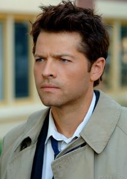

Um site para o Fandom de Supernatural!!
Dean Winchester ⛤
Sam Winchester ⛤
Voltar para o Site principal.

O personagem Castiel tem como inspiração direta, o personagem dos quadrinhos da DC Comics, Jonh Constantine.
Como Castiel é dito como um anjo que não tem um corpo físico e apenas espiritual, ele necessita de receptáculos humanos para poder fazer contato com o mundo dos humanos, Castiel mesmo aparecendo em sua grande parte no corpo de
Jimmy Novak, ele já teve diversas cascas em toda a história, como uma versão feminina de 1901 que não é dita o nome, e a de Claire Novak, filha de Jimmy Novak.
A forma angelical de Castiel nunca foi mostrada na série, mas é dito que Castiel em sua verdadeira forma, é maior que um prédio de grande porte! outro fato que é mostrado na série, é que só pelo fato de Castiel se mostrar em sua verdadeira forma para qualquer um considerado "mortal", o ser tem seus olhos queimados logo em seguida, pois não podem aguentar ver formas dívinas, assim como não pode ouvir sua voz, caso Castiel em sua forma angelical perto de qualquer mortal, o mortal escutará apenas um alto zumbido e um grande desconforto.